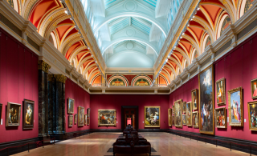
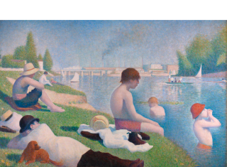
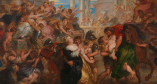
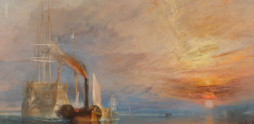
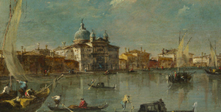
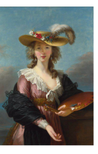
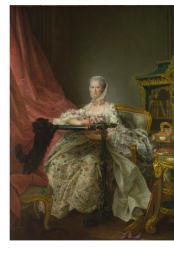
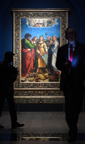

The National Gallery

The National Gallery houses the national collection of paintings in the Western European tradition from the 13th to the 19th centuries.
This is the best place where people can understand the culture of Western Europe from the 13th to the 19th centuries through works of art.
Highlights From the Collections

- Room 43
- 23 Paintings in this room
- You can see world famous paintings by Gauguin, Seurat and Van Gogh here.
- The painting in the picture named “Bathers at Asnières” by Georges Seurat. The use of color in this painting makes me feel comfortable. The people resting by the river are in sharp contrast with the factory in the distance that is constantly emitting smoke due to production.
- You can also find other paintings with big name such as “Sunflowers”, “Two Crabs”, “Van Gogh’s Chair” and “Motherhood”.

- Room 18
- 10 Paintings in this room
- You can see the paintings by Peter Paul Rubens, the most celebrated Flemish painter of Western art.
- Rubens, a accomplished religious painter depicting the Catholic response to the Reformation, enjoyed a successful career during the Counter-Reformation. He served as a diplomat, painted for European courts, and skillfully conveyed both Counter-Reformation messages and classical antiquity tales with innovative compositions and vibrant colors.
- The details of all the paintings in this room are very clear, including the shapes and expressions of the characters, which are all lifelike.

- Room 34
- 21 Paintings in this room
- This room are involved with both landscape paintings and portraits.
- Paintings by John Constable, Thomas Gainsborough, Joseph Mallord William Turner and so on.
- While Stubbs was the only artist to depict heroic racehorses in a clearly British way, Gainsborough and Reynolds' portraits of British society by the late eighteenth century adopted a large European size. In their family and group portraits, Derby artists Hogarth and Wright stuck to the conventional themes of mortality. More people in France than in England appreciated Constable's avant-garde approach to landscape painting, which emphasized the fleeting nature of light and weather.

- Room 39
- 19 Paintings in this room
- Paintings by Canaletto, Francesco Guardi, Giovanni Battista Tiepolo and so on.
- These paintings mainly depict Venice at the end of the 18th century.
- Venice, while no longer a maritime powerhouse, still thrived in trade and art until the late 18th century. Canaletto and Guardi excelled in portraying Venetian views, with Guardi emphasizing light and city activity. Tiepolo's vibrant art sparked a renaissance, influencing Pittoni, who played a key role in the international success of Venetian Rococo.


- Room 33
- 22 Paintings in this room
- Paintings by Jacques-Louis David, Jean-Honoré Fragonard, Claude-Joseph Vernet and so on.
- There are mostly portraits in this room, and the overall style is mainly realistic. Some paintings are created with a combination of realism and religious culture.
- The painting below is a naturalistic portrait of Madame de Pompadour, Louis XV's former mistress, is a departure from formal court art. Painted towards the end of her life, it depicts her in a matronly role, immersed in tapestry work in her Versailles apartment. The portrait highlights her as a patron of arts and fashion, embodying bourgeois virtues. Interestingly, the artwork is composed of two canvases, with a smaller one featuring her head and shoulders seamlessly integrated into the larger full-length depiction.
Tips Before You Go

Hope You Enjoy the Place!